Primers • Parameter Efficient Fine-Tuning
- Overview
- Parameter-Efficient Fine-Tuning (PEFT)
- Advantages
- PEFT methods
- Summary of LoRA Techniques
- Which PEFT Technique to Choose: A Mental Model
- Comparison of popular PEFT methods
- Practical Tips for Finetuning LLMs Using LoRA
- Surgical fine-tuning
- Tracing Model Outputs to the Training Data by Anthropic
- LoRA vs. QLoRA experimentation by Sebastian Raschka
- Papers
- Repos
- References
- Citation
Overview
- Fine-tuning of large pre-trained models on downstream tasks is called “transfer learning”.
- While full fine-tuning pre-trained models on downstream tasks is a common, effective approach, it is an inefficient approach to transfer learning.
- The simplest way out for efficient fine-tuning could be to freeze the networks’ lower layers and adapt only the top ones to specific tasks.
- In this article, we’ll explore Parameter Efficient Fine-Tuning (PEFT) methods that enable us to adapt a pre-trained model to downstream tasks more efficiently – in a way that trains lesser parameters and hence saves cost and training time, while also yielding performance similar to full fine-tuning.
Parameter-Efficient Fine-Tuning (PEFT)
- Let’s start off by defining what parameter-efficient fine-tuning is and give some context on it.
- Parameter-efficient fine-tuning is particularly used in the context of large-scale pre-trained models (such as in NLP), to adapt that pre-trained model to a new task without drastically increasing the number of parameters.
- The challenge is this: modern pre-trained models (like BERT, GPT, T5, etc.) contain hundreds of millions, if not billions, of parameters. Fine-tuning all these parameters on a downstream task, especially when the available dataset for that task is small, can easily lead to overfitting. The model may simply memorize the training data instead of learning genuine patterns. Moreover, introducing additional layers or parameters during fine-tuning can drastically increase computational requirements and memory consumption.
- As mentioned earlier, PEFT allows to only fine-tune a small number of model parameters while freezing most of the parameters of the pre-trained LLM. This helps overcome the catastrophic forgetting issue that full fine-tuned LLMs face where the LLM forgets the original task it was trained on after being fine-tuned.
- The image and advantages below, by Sebastian Raschka, gives a nice overview of PEFT and its benefits.
- 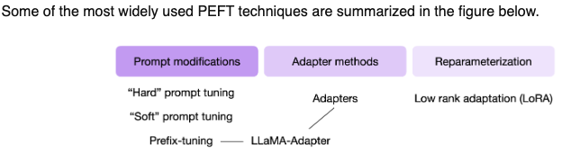
Advantages
- Parameter-efficient fine-tuning is useful due the following reasons:
- Reduced computational costs (requires fewer GPUs and GPU time).
- Faster training times (finishes training faster).
- Lower hardware requirements (works with cheaper GPUs with less VRAM).
- Better modeling performance (reduces overfitting).
- Less storage (majority of weights can be shared across different tasks).
Practical use-case
- Credits to the below section go to Pranay Pasula.
- PEFT obviates the need for 40 or 80GB A100s to make use of powerful LLMs. In other words, you can fine-tune 10B+ parameter LLMs for your desired task for free or on cheap consumer GPUs.
- Using PEFT methods like LoRA, especially 4-bit quantized base models via QLoRA, you can fine-tune 10B+ parameter LLMs that are 30-40GB in size on 16GB GPUs. If it’s out of your budget to buy a 16GB GPU/TPU, Google Colab occasionally offers a 16GB VRAM Tesla T4 for free. Remember to save your model checkpoints every now and then and reload them as necessary, in the event of a Colab disconnect/kernel crash.
- If you’re fine-tuning on a single task, the base models are already so expressive that you need only a few (~10s-100s) of examples to perform well on this task. With PEFT via LoRA, you need to train only a trivial fraction (in this case, 0.08%), and though the weights are stored as 4-bit, computations are still done at 16-bit.
- Note that while a good amount of VRAM is still needed for the fine-tuning process, using PEFT, with a small enough batch size, and little gradient accumulation, can do the trick while still retaining ‘fp16’ computation. In some cases, the performance on the fine-tuned task can be comparable to that of a fine-tuned 16-bit model.
- Key takeaway: You can fine-tune powerful LLMs to perform well on a desired task using free compute. Use a <10B parameter model, which is still huge, and use quantization, PEFT, checkpointing, and provide a small training set, and you can quickly fine-tune this model for your use case.
PEFT methods
- Below, we will delve into individual PEFT methods and delve deeper into their nuances.
Prompt Modifications
Soft Prompt Tuning
- First introduced in the The Power of Scale for Parameter-Efficient Prompt Tuning; this paper by Lester et al. introduces a simple yet effective method called soft prompt tuning, which prepends a trainable tensor to the model’s input embeddings, essentially creating a soft prompt to condition frozen language models to perform specific downstream tasks. Unlike the discrete text prompts, soft prompts are learned through backpropagation and can be fine-tuned to incorporate signals from any number of labeled examples.
- Soft prompt tuning only requires storing a small task-specific prompt for each task, and enables mixed-task inference using the original pre-trained model.
- The authors show that prompt tuning outperforms few-shot learning by a large margin, and becomes more competitive with scale.
- This is an interesting approach that can help to effectively use a single frozen model for multi-task serving.
- Model tuning requires making a task-specific copy of the entire pre-trained model for each downstream task and inference must be performed in separate batches. Prompt tuning only requires storing a small task-specific prompt for each task, and enables mixed-task inference using the original pretrained model. With a T5 “XXL” model, each copy of the tuned model requires 11 billion parameters. By contrast, our tuned prompts would only require 20,480 parameters per task—a reduction of over five orders of magnitude – assuming a prompt length of 5 tokens.
- Thus, instead of using discrete text prompts, prompt tuning employs soft prompts. Soft prompts are learnable and conditioned through backpropagation, making them adaptable for specific tasks.
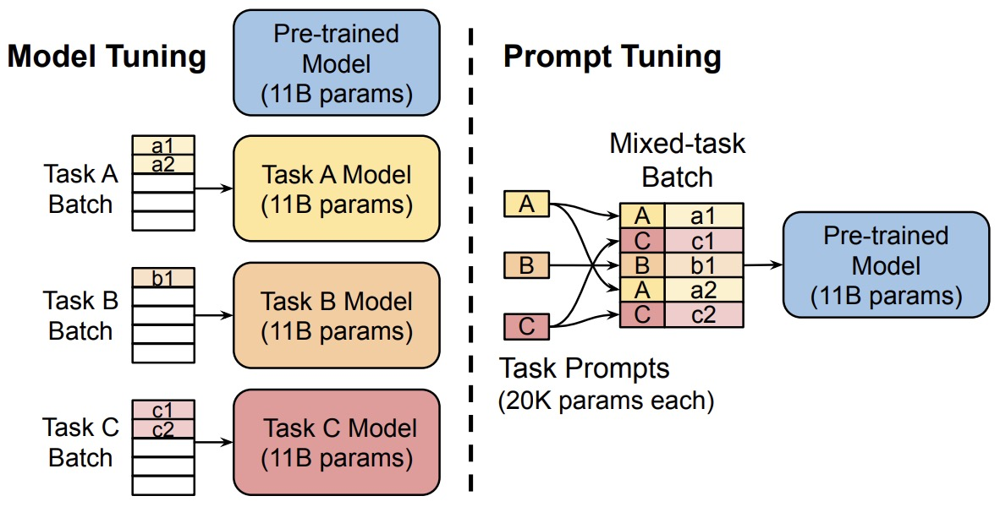
- Prompt Tuning offers many benefits such as:
- Memory-Efficiency: Prompt tuning dramatically reduces memory requirements. For instance, while a T5 “XXL” model necessitates 11 billion parameters for each task-specific model, prompt-tuned models need a mere 20,480 parameters (assuming a prompt length of 5 tokens).
- Versatility: Enables the use of a single frozen model for multi-task operations.
- Performance: Outshines few-shot learning and becomes more competitive as the scale grows.
Soft Prompt vs Prompting
- Soft prompt tuning and prompting a model with extra context are both methods designed to guide a model’s behavior for specific tasks, but they operate in different ways. Here’s how they differ:
- Mechanism:
- Soft Prompt Tuning: This involves introducing trainable parameters (soft prompts) that are concatenated or added to the model’s input embeddings. These soft prompts are learned during the fine-tuning process and are adjusted through backpropagation to condition the model to produce desired outputs for specific tasks.
- Prompting with Extra Context: This method involves feeding the model with handcrafted or predefined text prompts that provide additional context. There’s no explicit fine-tuning; instead, the model leverages its pre-trained knowledge to produce outputs based on the provided context. This method is common in few-shot learning scenarios where the model is given a few examples as prompts and then asked to generalize to a new example.
- Trainability:
- Soft Prompt Tuning: The soft prompts are trainable. They get adjusted during the fine-tuning process to optimize the model’s performance on the target task.
- Prompting with Extra Context: The prompts are static and not trainable. They’re designed (often manually) to give the model the necessary context for the desired task.
- Use Case:
- Soft Prompt Tuning: This method is particularly useful when there’s a need to adapt a pre-trained model to various downstream tasks without adding significant computational overhead. Since the soft prompts are learned and optimized, they can capture nuanced information necessary for the task.
- Prompting with Extra Context: This is often used when fine-tuning isn’t feasible or when working with models in a zero-shot or few-shot setting. It’s a way to leverage the vast knowledge contained in large pre-trained models by just guiding their behavior with carefully crafted prompts.
- In essence, while both methods use prompts to guide the model, soft prompt tuning involves learning and adjusting these prompts, whereas prompting with extra context involves using static, handcrafted prompts to guide the model’s behavior.
Prefix tuning
- Proposed in Prefix-Tuning: Optimizing Continuous Prompts for Generation, prefix-tuning is a lightweight alternative to fine-tuning for natural language generation tasks, which keeps language model parameters frozen, but optimizes a small continuous task-specific vector (called the prefix).
- Instead of adding a soft prompt to the model input, it prepends trainable parameters to the hidden states of all transformer blocks. During fine-tuning, the LM’s original parameters are kept frozen while the prefix parameters are updated.
- Prefix-tuning draws inspiration from prompting, allowing subsequent tokens to attend to this prefix as if it were “virtual tokens”.
- The figure below from the paper shows that fine-tuning (top) updates all Transformer parameters (the red Transformer box) and requires storing a full model copy for each task. They propose prefix-tuning (bottom), which freezes the Transformer parameters and only optimizes the prefix (the red prefix blocks). Consequently, prefix-tuning only need to store the prefix for each task, making prefix-tuning modular and space-efficient. Note that each vertical block denote transformer activations at one time step.
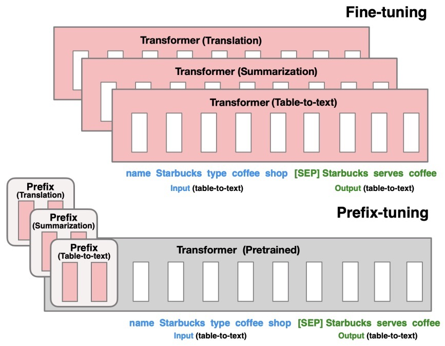
-
They apply prefix-tuning to GPT-2 for table-to-text generation and to BART for summarization. They find that by learning only 0.1% of the parameters, prefix-tuning obtains comparable performance in the full data setting, outperforms fine-tuning in low-data settings, and extrapolates better to examples with topics unseen during training.
-
The image below, by Sebastian Raschka, illustrate how in prefix tuning, trainable tensors are addted to each transformer block instead of only in the input embedding. 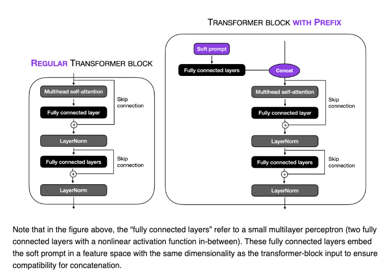
Hard prompt tuning
- Hard prompt tuning directly modifies the input prompt to the model. This can involve a vast multitude of things such as:
- We can add examples of outputs we expect from the prompt
- We can add tags specifically relating to our task at hand
- In essence, it is just the modification of the string input, or prompt, to the model.
Adapter Methods
- Adapter layers, often termed “Adapters”, add minimal additional parameters to the pretrained model. These adapters are inserted between existing layers of the network.
- Adapters is a PEFT technique shown to achieve similar performance as compared to tuning the top layers while requiring as fewer parameters as two orders of magnitude.
- Adapter-based tuning simply inserts new modules called “adapter modules” between the layers of the pre-trained network.
- The image below, by Sebastian Raschka, illustrates this concept for the transformer block:
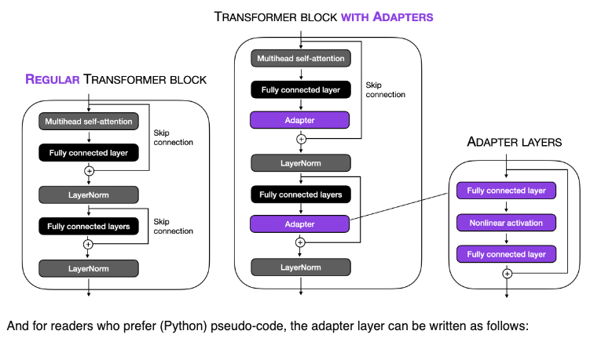
- During fine-tuning, only the parameters of these adapter layers are updated, while the original model parameters are kept fixed. This results in a model with a small number of additional parameters that are task-specific.
- Keeping the full PT model frozen, these modules are the only optimizable ones while fine-tuning – this means only a very few parameters are introduced per task yielding “compact” models.
- They offer many benefits such as:
- Parameter-Efficiency: By keeping the main model frozen and only updating the adapter layers, a minimal number of parameters are added per task. This results in compact models that are memory-efficient.
- Performance: Despite the small parameter footprint, adapters often achieve performance comparable to conventional fine-tuning.
-
The adapter module consists of two fully connected layers with a bottleneck structure. This structure is inspired by autoencoders, which are designed to encode information into a compressed representation and then decode it back to its original form.
- Here’s how the parameter efficiency is achieved:
-
Bottleneck Structure: The first layer of the adapter reduces the dimensionality of the input (e.g., from 1024 to 24 dimensions). This drastic reduction means that the information from the original 1024 dimensions must be compressed into just 24 dimensions. The second layer then projects these 24 dimensions back to the original 1024 dimensions.
-
Reduction in Parameters: This bottleneck approach significantly reduces the number of parameters. In your example, the total number of parameters introduced by the adapter is 49,152 (from the computation 1024x24 + 24x1024). If we were to use a single fully connected layer to project a 1024-dimensional input to a 1024-dimensional output directly, it would require 1,048,576 parameters (1024x1024).
-
Efficiency Analysis: By using the adapter approach, the number of parameters is substantially lower. Comparing 49,152 parameters to 1,048,576 parameters shows a dramatic reduction, making the adapter much more efficient in terms of parameter usage.
-
Why is this Beneficial?: This efficiency is particularly beneficial when fine-tuning large pre-trained models. Instead of retraining or adapting the entire network (which would be computationally expensive and memory-intensive), adapters allow for targeted adjustments with far fewer additional parameters. This makes the process more manageable and practical, especially when resources are limited.
- The adapter’s bottleneck structure allows it to achieve similar functionality (adapting the model to new tasks or data) as a full-sized layer would, but with a significantly reduced number of parameters. This efficiency makes adapters a popular choice for fine-tuning large pre-trained models in a resource-effective manner.
What is an Adapter Module?
- Let’s look at the application of the adapter module in the transformer architecture in three points:
- The adapter module (right) first projects the original \(d\)-dimensional features into a smaller \(m\)-dimensional vector, applies a non-linearity, and then projects it back to \(d\) dimensions.
- As can be seen, the module features a skip-connection - With it in place, when the parameters of the projection layers are initialized to near-zero which eventually leads to near identity initialization of the module. This is required for stable fine-tuning and is intuitive as with it, we essentially do not disturb the learning from pre-training.
- In a transformer block (left), the adapter is applied directly to the outputs of each of the layers (attention and feedforward).
How to decide the value of \(m\)?
- The size \(m\) in the Adapter module determines the no. of optimizable parameters and hence poses a parameter vs performance tradeoff.
- The original paper experimentally investigates that the performance remains fairly stable across varying Adapter sizes m and hence for a given model a fixed size can be used for all downstream tasks.
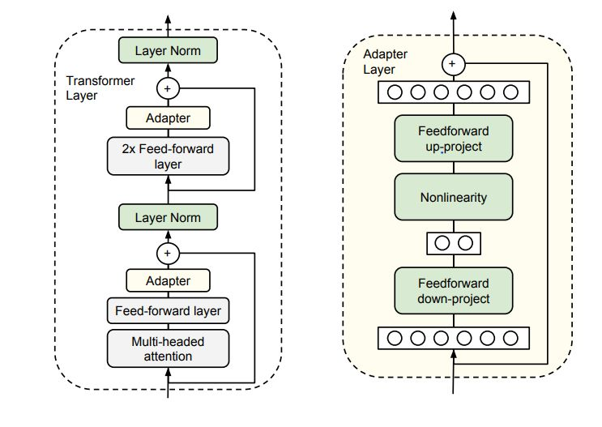
LLaMA-Adapters
- This paper introduces an efficient fine-tuning method called LLaMA-Adapter. This method is designed to adapt the LLaMA model into an instruction-following model with high efficiency in terms of resource usage and time. Key aspects of this paper include:
-
Parameter Efficiency: LLaMA-Adapter introduces only 1.2 million learnable parameters on top of the frozen LLaMA 7B model, which is significantly fewer than the full 7 billion parameters of the model. This approach leads to a more efficient fine-tuning process both in terms of computational resources and time, taking less than one hour on 8 A100 GPUs.
-
Learnable Adaption Prompts: The method involves appending a set of learnable adaption prompts to the input instruction tokens in the higher transformer layers of LLaMA. These prompts are designed to adaptively inject new instructions into the frozen LLaMA while preserving its pre-trained knowledge, effectively guiding the subsequent contextual response generation.
-
Zero-initialized Attention Mechanism: To avoid disturbances from randomly initialized adaption prompts, which can harm fine-tuning stability and effectiveness, the paper proposes a zero-initialized attention mechanism with a learnable gating factor. This mechanism allows for a stable learning process and progressive incorporation of instructional signals during training. It ensures that the newly acquired instructional signals are effectively integrated into the transformer while retaining the pre-trained knowledge of LLaMA.
-
Generalization and Multi-modal Reasoning: LLaMA-Adapter is not only effective for language tasks but can also be extended to multi-modal instructions, allowing for image-conditioned LLaMA models. This capability enables superior reasoning performance on benchmarks like ScienceQA and COCO Caption. Additionally, the approach has demonstrated strong generalization capacity in traditional vision and language tasks.
-
In summary, the LLaMA-Adapter represents a significant advancement in the field of parameter-efficient fine-tuning of large language models. Its innovative use of learnable adaption prompts and zero-initialized attention mechanism provides a highly efficient method for adapting pre-trained models to new tasks and domains, including multi-modal applications.
-
The image below, by Sebastian Raschka,illustrates this concept below. 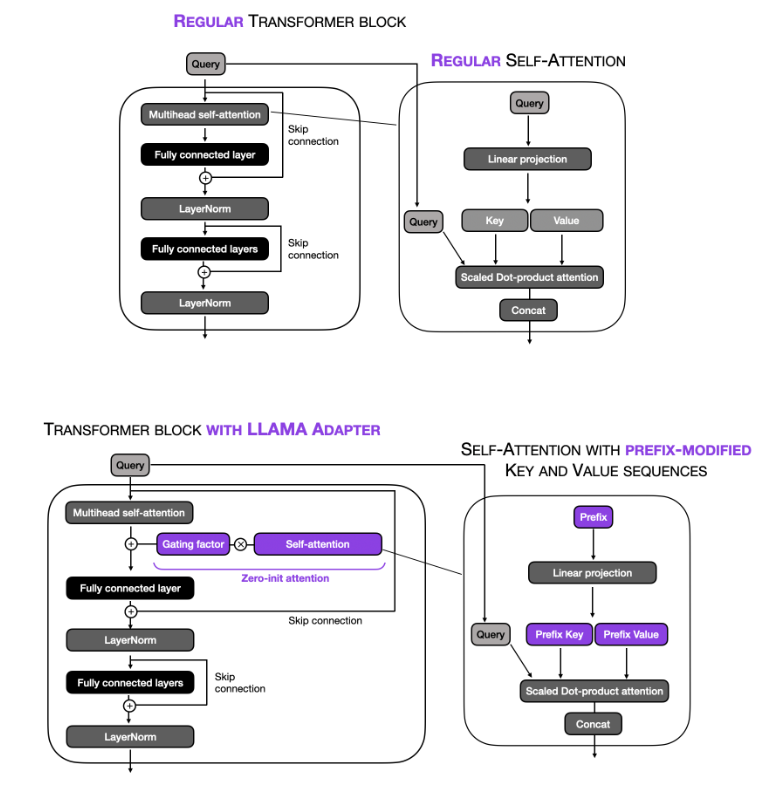
Reparameterization
Low Rank Adaptation (LoRA)
- Essence:
- Low Rank Adaptation (LoRA) simplifies the fine-tuning of large models by decomposing complex, high-dimensional weight matrices into lower-dimensional forms. This technique, akin to methods like PCA and SVD, allows for the retention of critical information while significantly reducing the size and complexity of the weights, thus enhancing fine-tuning efficiency on resource-constrained settings.
- Application:
- LoRA identifies key dimensions in the original weight matrix of neural networks, optimizing these reduced dimensions to maintain the model’s learning capabilities with less computational cost. It adds trainable low-rank matrices to the model’s architecture, specifically to the Transformer layers, and optimizes these matrices instead of the entire model, leading to fewer trainable parameters and reduced memory requirements.
- Benefits:
- This approach offers considerable time and memory efficiency, as a large portion of the model’s parameters are kept frozen, reducing both training time and GPU memory requirements. It also avoids additional inference latency and facilitates easy task-switching during deployment, requiring changes only in a small subset of weights.
- In Summary:
- LoRA represents a smart balance in model fine-tuning, preserving the core strengths of large pre-trained models while adapting them efficiently for specific tasks or datasets. It’s a technique that redefines efficiency in the world of massive language models.
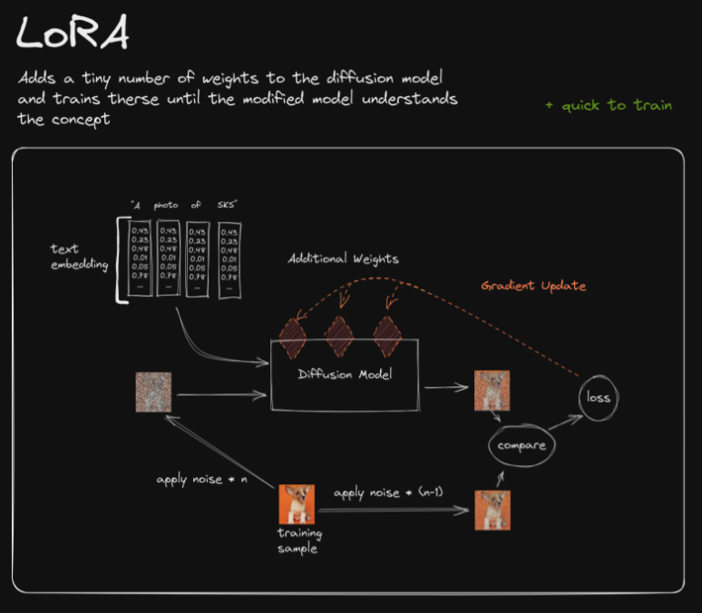
- A matrix is said to be rank-deficient if it does not have full rank. The rank deficiency of a matrix is the difference between the lesser of the number of rows and columns, and the rank. For more, refer Wikipedia: Rank.
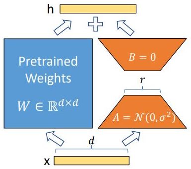
- Before we continue, let’s recap by taking a quick look at traditional finetuning vs. LoRA with the images (source) below:
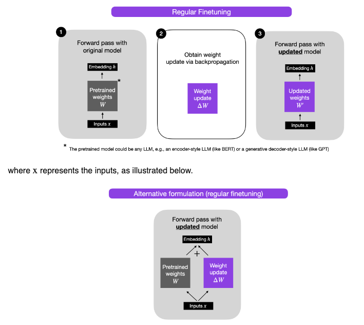
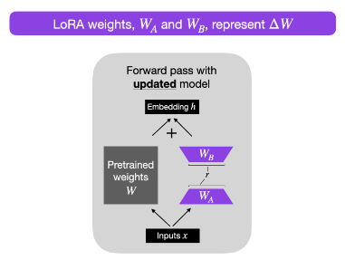
LoRA efficiently fine-tunes large-scale neural networks by introducing trainable low-rank matrices, simplifying the model’s complexity while retaining its robust learning capabilities.
QLoRA
- Definition:
- Quantized Low-Rank Adaptation (QLoRA) is a method designed to efficiently fine-tune large pre-trained language models (LLMs), like a 65B parameter model, on limited GPU memory without sacrificing performance. It combines the principles of Low-Rank Adaptation (LoRA) with innovative 4-bit NormalFloat (NF4) quantization and Double Quantization techniques, optimizing parameter efficiency and computational resource utilization.
- Key Components:
- Low-Rank Adaptation: QLoRA follows LoRA’s strategy of injecting trainable low-rank matrices into the architecture of pretrained LLMs, specifically targeting Transformer layers. This selective fine-tuning strategy focuses on optimizing these low-rank matrices rather than the entire model, reducing the number of trainable parameters and computational costs.
- Quantization: The distinguishing aspect of QLoRA lies in its quantization approach, which includes:
- NF4 Quantization: This technique involves quantizing the model weights to 4-bit NormalFloat (NF4), efficiently compressing them to fit a specific distribution suitable for NF4 without complex algorithms.
- Double Quantization: This secondary quantization further reduces memory overhead by quantizing the quantization constants themselves, using 8-bit floats with a 256 block size, achieving significant memory savings without affecting model performance.
- Operation:
- QLoRA employs a frozen, 4-bit quantized pretrained language model and fine-tunes it by backpropagating gradients into the low rank adapters. This method optimizes computation through low-bit quantization and reduces the number of parameters by using low-rank structures, striking a balance between efficiency and performance.
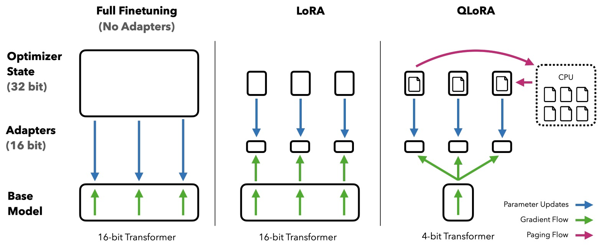
In the QLoRA approach, it is the original model’s weights that are quantized to 4-bit precision. The newly added Low-rank Adapter (LoRA) weights are not quantized; they remain at a higher precision and are fine-tuned during the training process. This strategy allows for efficient memory use while maintaining the performance of large language models during finetuning.
Quantization-Aware Low-Rank Adaptation (QALoRA)
-
Quantization-Aware Low-Rank Adaptation (QALoRA) is an enhancement of LoRA specifically designed for efficient fine-tuning of low-bit diffusion models. It differentiates itself from LoRA and QLoRA by introducing a quantization-aware variant that allows for the joint quantization of LoRA weights with model weights. This enables efficient bit-wise operations during inference, thus optimizing both the memory footprint and computational efficiency. QALoRA addresses the challenges of fine-tuning in low-bit settings by merging and quantizing LoRA weights with full-precision model weights, a key distinction from its predecessors.
- Essence:
- QALoRA, standing for Quantization-Aware Low-Rank Adapter, is an advanced method for fine-tuning low-bit diffusion models efficiently. It uniquely combines the principles of Low-Rank Adaptation with quantization-aware techniques.
- Application:
- This approach allows for the joint quantization of LoRA weights with the full-precision model weights, optimizing both memory usage and computational efficiency during inference. This makes it particularly suitable for low-bit settings where traditional methods may be less effective.
- In Summary:
- QALoRA represents an innovative stride in fine-tuning diffusion models, addressing the challenges in low-bit environments by merging and quantizing LoRA weights with model weights, thus enhancing both the efficiency and effectiveness of the process.
QALoRA quantizes both the new LoRA weights and the original model’s weights. In the QALoRA approach, the LoRA weights are first merged (a combination of these weights followed by their joint quantization to a specific target bit-width) with the full-precision model weights and then jointly quantized to the targeted bit-width. This process ensures that both the added LoRA weights and the existing weights of the model are quantized together, optimizing memory and computational efficiency during inference.
- Overall steps for QALoRA:
-
Adding LoRA Weights: Initially, QALoRA adds Low-Rank Adapter (LoRA) weights to the pre-trained model.
-
Fine-Tuning LoRA Weights: These LoRA weights are then fine-tuned. This fine-tuning step involves updating only the LoRA weights while keeping the original weights of the model unchanged.
-
Merging LoRA and Original Model Weights: After the fine-tuning of the LoRA weights, these weights are merged with the original weights of the model.
-
Quantization: The merged weights (original model weights + LoRA weights) are then quantized together . This quantization step converts them into a lower-bit format, which is crucial for reducing memory and computational costs.
-
Refined Low-Rank Adaptation (ReLoRA)
- Refined Low-Rank Adaptation (ReLoRA), is a technique that refines the Low-Rank Adaptation (LoRA) approach for training high-rank networks more efficiently. It leverages the concept of low-rank updates in a novel way to achieve high-rank training results.
- ReLoRA applies low-rank updates iteratively, each time incrementally increasing the effective rank of the model. This approach allows for a more robust training process, capable of achieving results comparable to high-rank training while using significantly fewer resources.
- ReLoRA represents an advancement in efficient neural network training, enabling the training of high-performing, large-scale models with reduced computational requirements. It’s particularly useful for large transformer language models.
ReLoRA refines neural network training by iteratively applying low-rank updates to achieve high-rank performance, streamlining the process for large models.
- ReLoRA differs from prior techniques like LoRA by iteratively applying low-rank updates, each time effectively increasing the rank of the model, which allows for training high-rank networks more efficiently. This iterative process of increasing the rank distinguishes ReLoRA from the standard low-rank update methods, offering a more dynamic and refined approach to training large-scale models.
ReFT: Representation Finetuning for Language Models
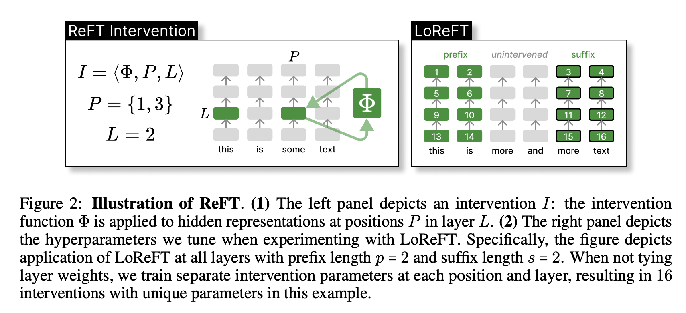
-
Introduction of Representation Finetuning (ReFT): ReFT methods focus on adapting language models by editing representations rather than weights. This approach intervenes on hidden representations of a frozen base model to learn task-specific modifications.
-
Concept of Low-rank Linear Subspace ReFT (LoReFT): LoReFT is an instance within the ReFT methods that employs low-rank projection matrices to intervene on hidden representations. It is demonstrated to be 10×–50× more parameter-efficient compared to existing state-of-the-art parameter-efficient finetuning methods (PEFTs).
- Technical Details:
- Distributed Alignment Search (DAS): Utilizes low-rank projections to find subspaces in hidden representations that maximize the probability of desired outputs under interventions.
- Intervention Strategy: LoReFT modifies the hidden representations by adding a term derived from a low-rank linear projection of the representation itself.
- Implementation: LoReFT operates as a drop-in replacement for weight-based PEFTs, requiring far fewer parameters and simplifying the model’s complexity during training and inference.
- Efficiency and Performance:
- LoReFT achieves significant reductions in the number of trainable parameters while either maintaining or improving performance across a variety of natural language processing tasks.
- Demonstrated on models like RoBERTa and LLaMA across benchmarks like commonsense reasoning, arithmetic reasoning, and natural language understanding benchmarks.
-
Use Case Generalization: The paper evaluates LoReFT on a range of tasks and model sizes, showing broad applicability and efficiency, especially in larger models.
- Public Release of ReFT Training Library: The authors have made a ReFT training library available, facilitating the adoption and further exploration of this finetuning approach by the research community.
Summary of LoRA Techniques
- The following section is inspired from Cameron Woulfe’s [(source])(https://www.linkedin.com/in/cameron-r-wolfe-ph-d-04744a238/) post.
- Here’s an overview of some prevalent variants of LoRA techniques:
- LoRA models the update derived for a model’s weights during finetuning with a low rank decomposition, implemented in practice as a pair of linear projections. LoRA leaves the pretrained layers of the LLM fixed and injects a trainable rank decomposition matrix into each layer of the model.
- QLoRA is (arguably) the most popular LoRA variant and uses model quantization techniques to reduce memory usage during finetuning while maintaining (roughly) equal levels of performance. QLoRA uses 4-bit quantization on the pretrained model weights and trains LoRA modules on top of this. In practice, QLoRA saves memory at the cost of slightly-reduced training speed.
- QA-LoRA is an extension of LoRA/QLoRA that further reduces the computational burden of training and deploying LLMs. It does this by combining parameter-efficient finetuning with quantization (i.e., group-wise quantization applied during training/inference).
- LoftQ studies a similar idea to QA-LoRA—applying quantization and LoRA finetuning on a pretrained model simultaneously.
- LongLoRA attempts to cheaply adapt LLMs to longer context lengths using a parameter-efficient (LoRA-based) finetuning scheme. In particular, we start with a pretrained model and finetune it to have a longer context length. This finetuning is made efficient by:
- Using sparse local attention instead of dense global attention (optional at inference time).
- Using LoRA (authors find that this works well for context extension).
- S-LoRA aims to solve the problem of deploying multiple LoRA modules that are used to adapt the same pretrained model to a variety of different tasks. Put simply, S-LoRA does the following to serve thousands of LoRA modules on a single GPU (or across GPUs):
- Stores all LoRA modules in main memory.
- Puts modules being used to run the current query into GPU memory.
- Uses unified paging to allocate GPU memory and avoid fragmentation.
- Proposes a new tensor parallelism strategy to batch LoRA computations.
- ReLoRA refines neural network training by iteratively applying low-rank updates to achieve high-rank performance, streamlining the process for large models.
- Many other LoRA variants exist as well:
- LQ-LoRA: uses a more sophisticated quantization scheme within QLoRA that performs better and can be adapted to a target memory budget.
- MultiLoRA: extension of LoRA that better handles complex multi-task learning scenarios.
- LoRA-FA: freezes half of the low-rank decomposition matrix (i.e., the A matrix within the product AB) to further reduce memory overhead.
- Tied-LoRA: leverages weight tying to further improve the parameter efficiency of LoRA.
- GLoRA: extends LoRA to adapt pretrained model weights and activations to each task in addition to an adapter for each layer.
Which PEFT Technique to Choose: A Mental Model
- Choosing a PEFT involves simply matching them with your objectives as shown in the figure below.
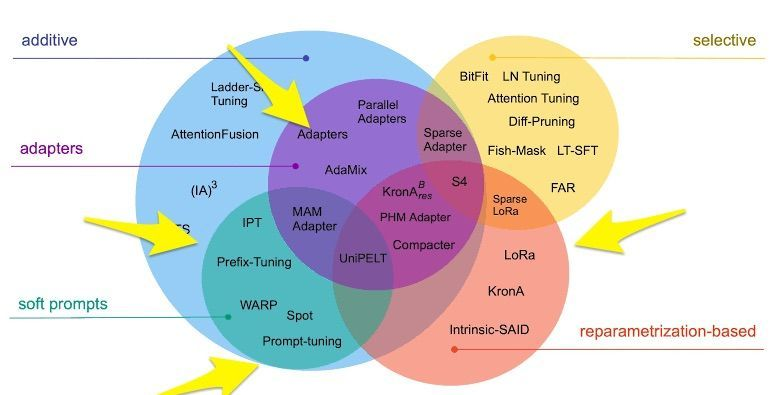
Soft Prompt Tuning
-
What: Soft Prompt tuning involves adding a small trainable prefix to the input of the pre-trained LLM during fine-tuning, which modifies the representation learned by the pre-trained model to better suit the downstream task.
-
When to use: Prompt Tuning is a good choice when you have a large pre-trained LLM but want to fine-tune it for multiple different downstream tasks at inference time with minimal computational resources. It is also useful when you want to generate diverse and high-quality text outputs based on specific prompts.
Prefix Tuning
-
What: Prefix Tuning involves learning a set of trainable parameters that modify the pre-trained LLM’s hidden states in response to task-specific prompts during inference, effectively fine-tuning the model at inference time.
-
When to use: When you want to fine-tune a pre-trained LLM for a specific downstream task and have limited computational resources when you want to modify the representation learned by the pre-trained model for a particular task.
Adapters
-
What: Adapters are tiny modules that are added to pre-trained LLMs, typically between the pre-trained layers, to adapt the model to new downstream tasks. During fine-tuning, only the weights of the adapter are learned, while the pre-trained model’s parameters remain fixed.
-
When to use: When you need to fine-tune multiple downstream tasks on the same pre-trained model. Additionally, Adapters are flexible and can be quickly and easily plugged into different parts of the pre-trained model without requiring major modifications.
LoRA
-
What: LoRA (Low-Rank Adaptation) is a technique that modifies the pre-trained LLM’s attention mechanism during fine-tuning by introducing a low-rank matrix factorization that learns task-specific attention patterns.
-
When to use: LoRA is a good choice when you want to fine-tune a pre-trained LLM for a specific downstream task that requires task-specific attention patterns. It is also useful when you have limited computational resources and want to reduce the number of trainable parameters in the model. Specifically:
- Memory Efficiency is Desired but Not Critical: LoRA offers substantial savings in terms of parameters and computational requirements. If you’re looking to achieve a balanced reduction in trainable parameters without diving into the complexities of quantization, LoRA is an ideal choice.
- Real-time Application: LoRA ensures no added inference latency, making it suitable for real-time applications.
- Task-Switching is Required: LoRA can share the pretrained model across multiple tasks, reducing the need for maintaining separate models for each task.
QALoRA
-
What: QALoRA is a specialized technique for fine-tuning low-bit diffusion models. It integrates quantization-aware strategies with Low-Rank Adaptation (LoRA) principles, providing an efficient way to handle low-bit model environments.
-
When to use: Ideal for scenarios where the primary goal is to optimize memory usage and computational efficiency in low-bit settings. This method is particularly effective when traditional fine-tuning approaches fall short due to the constraints of low-bit environments.
- Key Features:
- Quantization-Aware Approach: QALoRA uniquely combines LoRA weights with full-precision model weights, then jointly quantizes them, enhancing memory and computational efficiency during inference.
- Efficient for Low-Bit Models: Tailored for low-bit diffusion models, it addresses the specific challenges posed by these environments, making it a standout choice in such contexts.
- Process:
- Adding LoRA Weights: QALoRA begins by integrating LoRA weights into the pre-trained model.
- Fine-Tuning LoRA Weights: These weights are then fine-tuned, focusing solely on the LoRA weights while keeping the original model weights unchanged.
- Merging Weights: Post-fine-tuning, the LoRA and original model weights are merged.
- Quantization: The merged weights undergo quantization to a lower-bit format, crucial for reducing memory and computational costs.
ReLoRA
-
What: ReLoRA is an innovative approach for training high-rank networks efficiently. It revises the Low-Rank Adaptation method by iteratively applying low-rank updates to gradually increase the model’s effective rank.
-
When to use: Best suited for training large-scale models, particularly when the objective is to achieve high-rank training outcomes with less computational expenditure. ReLoRA is especially valuable for large transformer language models where resource efficiency is critical.
- Key Features:
- Iterative Low-Rank Updates: Unlike traditional low-rank methods, ReLoRA applies updates in an iterative manner, each time incrementally enhancing the model’s rank, leading to more efficient high-rank network training.
- Resource Efficiency: Allows for training of large, high-performing models while significantly reducing computational demands.
- Differentiation from Other Techniques:
- ReLoRA stands out from previous techniques like standard LoRA by its unique iterative process. This method incrementally increases the rank of the model through successive low-rank updates, enabling more dynamic and refined training for large-scale models.
Comparison of popular PEFT methods
| PEFT Methods | Description | When to Use | Computational Overhead | Memory Efficiency | Versatility across Tasks | Performance Impact |
|---|---|---|---|---|---|---|
| Prompt Tuning | Modifies LLM's hidden states with trainable parameters in response to task-specific prompts. | Large pre-trained LLM. Adaptation to multiple tasks. |
Low | Moderate | High | Depends on prompt quality |
| Prefix Tuning | Adds a trainable prefix to modify LLM's learned representation. | Task-specific adaptation. Limited resources. |
Low | Moderate | Moderate | Can vary, but usually positive with proper tuning |
| Adapters | Inserts neural modules between LLM layers; only adapter weights are updated during fine-tuning. | Multiple tasks on one LLM. Flexibility required. |
Moderate | Good (only adapters are fine-tuned) | High (can be added for multiple tasks) | Typically positive if adapters are well-tuned |
| LoRA | Introduces a low-rank matrix into the attention mechanism to learn task-specific patterns. | Tasks with specialized attention requirements. Limited resources. |
Low-Moderate | Good | Moderate | Generally positive with good training |
| QLoRA | Builds on LoRA with quantization for enhanced memory efficiency. | Strict memory constraints. Emphasis on performance & efficiency. |
Low | Excellent | High | Comparable or better than full fine-tuning |
| QALoRA | Enhances LoRA with quantization-aware techniques for fine-tuning low-bit diffusion models. | Optimizing efficiency in low-bit settings. Resource-constrained environments. |
Low | Excellent | Moderate | Enhanced efficiency and effectiveness in specific settings |
| ReLoRA | Iteratively applies low-rank updates for efficient training of high-rank networks. | Large-scale models requiring high-rank training with reduced resources. | Moderate | Good | Moderate | Achieves high-rank training efficiency and performance |
Practical Tips for Finetuning LLMs Using LoRA
- This section is inspired by the findings of Sebastian Raschka’s blog talking about practical tips for finetuning.
-
Consistency in LLM Training: Despite the inherent randomness in training models on GPUs, the outcomes of LoRA experiments remain consistent across multiple runs, which is promising for comparative studies.
-
QLoRA Compute-Memory Trade-offs: Quantized LoRA (QLoRA) offers a 33% reduction in GPU memory usage at the cost of a 33% increase in runtime, proving to be a viable alternative to regular LoRA when facing GPU memory constraints.
-
Learning Rate Schedulers: Using learning rate schedulers like cosine annealing can optimize convergence during training and avoid overshooting the loss minima. While it has a notable impact on SGD optimizer performance, it makes less difference when using Adam or AdamW optimizers.
-
Choice of Optimizers: The optimizer choice (Adam vs. SGD) doesn’t significantly impact the peak memory demands of LLM training, and swapping Adam for SGD may not provide substantial memory savings, especially with a small LoRA rank (r).
-
Impact of Multiple Training Epochs: Iterating multiple times over a static dataset in multi-epoch training may not be beneficial and could deteriorate model performance, possibly due to overfitting.
-
Applying LoRA Across Layers: Enabling LoRA across all layers, not just the Key and Value matrices, can significantly increase model performance, though it also increases the number of trainable parameters and memory requirements.
-
LoRA Hyperparameters: Adjusting the LoRA rank (r) and selecting an appropriate alpha value are crucial. A heuristic that yielded good results was setting alpha at twice the rank’s value, with r=256 and alpha=512 being the best setting in one particular case.
-
Fine-tuning Large Models: LoRA allows for fine-tuning 7 billion parameter LLMs on a single GPU with 14 GB of RAM within a few hours. However, optimizing an LLM to excel across all benchmark tasks may be unattainable with a static dataset.
-
Additionally, the article addresses common questions related to LoRA:
-
Importance of Dataset: The dataset used for fine-tuning is critical, and data quality is very important. Experiments showed that a curated dataset with fewer examples (like LIMA) could yield better performance than larger datasets (like Alpaca).
-
LoRA for Domain Adaptation: LoRA’s effectiveness for domain adaptation requires further investigation. Including task-specific examples in the fine-tuning process is recommended.
-
Selecting the Best Rank: Choosing the best rank for LoRA is a hyperparameter that needs to be explored for each LLM and dataset. A larger rank could lead to overfitting, while a smaller rank may not capture diverse tasks within a dataset.
-
Enabling LoRA for All Layers: Exploring the impact of enabling LoRA for different combinations of layers is suggested for future experiments.
-
Avoiding Overfitting: To prevent overfitting, one could decrease the rank or increase the dataset size, adjust the weight decay rate, or consider increasing the dropout value for LoRA layers.
-
Other Optimizers: Exploring other optimizers, such as Sophia, which promises faster training and better performance than Adam, is suggested for future research.
-
Factors Influencing Memory Usage: Model size, batch size, the number of trainable LoRA parameters, and dataset size can influence memory usage. Shorter training sequences can lead to substantial memory savings.
Surgical fine-tuning
- A quick note here before we start, the Surgical fine-tuning paper, whose contents are mentioned below, focuses on computer vision and does not directly deal with large language models (LLMs). The techniques are applied to convolutional neural networks and vision transformers for image classification tasks.
- Authors: Yoonho Lee, Annie S. Chen, Fahim Tajwar, Ananya Kumar, Huaxiu Yao, Percy Liang, Chelsea Finn
- Definition: Surgical fine-tuning is a method of selectively updating specific layers in a neural network based on how a fine-tuning dataset differs from the original pretraining dataset, rather than retraining every layer.
- Motivation:
-
Layer Specificity: Early layers in a neural network capture fundamental features of inputs (e.g., edges or shapes in images), while deeper layers combine these features for predictions (e.g., classifying images).
-
Efficiency: Rather than universally fine-tuning every layer, selectively updating specific layers can achieve better performance, especially when the fine-tuning dataset has notable differences from the pretraining dataset.
-
- Approaches:
- Manual Approach:
- Fine-tune each layer individually and create a distinct model for each layer.
- Compare the performance of each model to identify the best layers for fine-tuning.
- Automated Approach:
- Calculate gradients for each layer.
- Derive relative gradients by dividing the layer’s gradient by its weight magnitude.
- Normalize these relative gradients across layers, ranking them between 0 to 1.
- Assign learning rates for layers based on their normalized relative gradient value during training.
- Based on the findings in this paper, here are some tips for determining which layers to fine-tune when adapting a pretrained model to a new target distribution:
- Consider the type of distribution shift between the source and target data: 1) For input-level shifts like image corruptions, fine-tuning earlier layers (first conv block) tends to work best. This allows the model to adapt to changes in the input while preserving higher-level features. 2) For feature-level shifts where the feature representations differ between source and target, fine-tuning middle layers (middle conv blocks) tends to work well. This tunes the mid-level features without distorting low-level or high-level representations. 3) For output-level shifts like label distribution changes, fine-tuning later layers (fully connected classifier) tends to be most effective. This keeps the feature hierarchy intact and only adapts the output mapping.
- Try fine-tuning only a single contiguous block of layers while freezing others. Systematically test first, middle, and last blocks to find the best one.
- Use criteria like relative gradient norms to automatically identify layers that change the most for the target data. Fine-tuning those with higher relative gradients can work better than full fine-tuning.
- When in doubt, fine-tuning only the classifier head is a solid default that outperforms no fine-tuning. But for shifts related to inputs or features, surgical fine-tuning of earlier layers can improve over this default.
- If possible, do some quick validation experiments to directly compare different surgical fine-tuning choices on a small held-out set of target data.
- The key insight is that different parts of the network are best suited for adapting to different types of distribution shifts between the source and target data.
- Manual Approach:
- Results:
- CIFAR-C Dataset:
- Manual approach yielded an accuracy of 82.8%.
- Fine-tuning the entire network resulted in 79.9% accuracy.
- The automated approach achieved an accuracy of 81.4%.
- CIFAR-C Dataset:
- Significance: Surgical fine-tuning is rooted in understanding how neural networks process input. This enhanced understanding can drive the discovery of more efficient methods to improve machine learning models.
- Consideration: For more complex datasets, discerning differences between pretraining and fine-tuning datasets can be challenging. This complexity might make automated approaches like the one proposed more valuable, even if it didn’t yield the best performance on CIFAR-C.
Tracing Model Outputs to the Training Data by Anthropic
- This article summarizes research by Anthropic on using influence functions to study how large language models generalize from their training data. While this is not specifically a fine-tuning methodology, it does provide some insight into the LLM’s generalization capabilities. The key points are:
- Influence functions let them identify which training examples most influence a model’s outputs. This provides clues about how models generalize.
- Influence functions are a technique from statistics used to determine which training examples most influence a machine learning model’s parameters and predictions.
- The key idea is to approximate how much adding or removing a training example would affect the model’s learned parameters. This lets you identify the most “influential” examples in the training set.
- They scaled up influence functions to very large models (up to 52B parameters), which is necessary to study behaviors that emerge at scale.
- Influence patterns become more abstract and conceptual with increasing model scale. Smaller models’ influences tend to involve token-level overlaps, while larger models’ influences are more thematically related.
- Influence also becomes more cross-lingual with scale. Translated queries have higher influence from English training examples in larger models.
- Influences are distributed across many training examples, not just a few. So models do not seem to be memorizing and reciting specific examples.
- Influence can be localized to specific layers. Lower layers capture detailed wording while higher layers capture more abstract concepts.
- Next steps are extending influence functions to fine-tuned models, connecting influence to mechanistic interpretability, and using it for alignment research.
LoRA vs. QLoRA experimentation by Sebastian Raschka
- This section is taken from Sebastian Raschka’s post on LoRA & QLoRA experiments to finetune open-source LLMs, and presents his learnings:
- Despite embracing the inherent randomness of LLM training (or when training models on GPUs in general), the outcomes remain remarkably consistent across multiple runs.
- QLoRA presents a trade-off that might be worthwhile if you’re constrained by GPU memory. It offers 33% memory savings at the cost of a 33% increase in runtime.
- When finetuning LLMs, the choice of optimizer shouldn’t be a major concern. While SGD on its own is suboptimal, there’s minimal variation in outcomes whether you employ AdamW, SGD with a scheduler, or AdamW with a scheduler.
- While Adam is often labeled a memory-intensive optimizer due to its introduction of two new parameters for every model parameter, this doesn’t significantly affect the peak memory demands of the LLM. This is because the majority of the memory is allocated for large matrix multiplications rather than retaining extra parameters.
- For static datasets, iterating multiple times as done in multi-epoch training might not be beneficial. It often deteriorates the results, probably due to overfitting.
- If you’re incorporating LoRA, ensure it’s applied across all layers, not just to the Key and Value matrices, to maximize model performance.
- Adjusting the LoRA rank is essential, and so is selecting an apt alpha value. A good heuristic is setting alpha at twice the rank’s value.
- 7B models can be finetuned efficiently within a few hours on a single GPU possessing 14 Gb of RAM.
- With a static dataset, optimizing an LLM to excel across all benchmark tasks is unattainable. Addressing this requires diverse data sources, or perhaps LoRA might not be the ideal tool.
Papers
Repos
References
- Finetuning LLMs Efficiently with Adapters
- Srishti Gureja on LinkedIn
- Sebastian Raschka on LinkedIn
- Prithivi Da on LinkedIn
- 🤗 PEFT: Parameter-Efficient Fine-Tuning of Billion-Scale Models on Low-Resource Hardware
Citation
If you found our work useful, please cite it as:
@article{Chadha2020DistilledMultitaskLearning,
title = {Multitask Learning},
author = {Chadha, Aman},
journal = {Distilled AI},
year = {2020},
note = {\url{https://aman.ai}}
}